Hush Line Field Manual
Hush Line is a lightweight, secure, and anonymous tip line. It's easy to install and use.
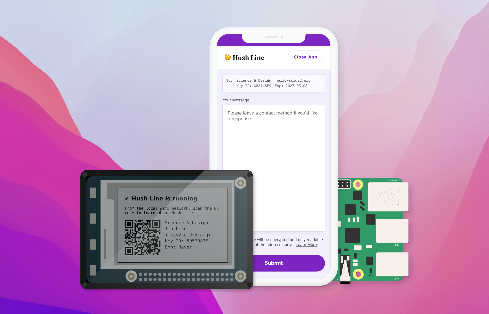Think of a box in your office or school where people can slip in anonymous messages, with a lock on it that only you have the key to open.
It's intended for journalists and newsrooms to offer a public tip line, by educators and school administrators to provide students with a safe way to report potentially sensitive information, or employers for anonymous employee reporting.
This guide will show you how to set up your own Hush Line.
The source files for this guide are available on GitHub. See that repo for licensing information.
What does Hush Line do?
Hush Line provides a safe way to receive private messages from your community when confidentiality is a must.
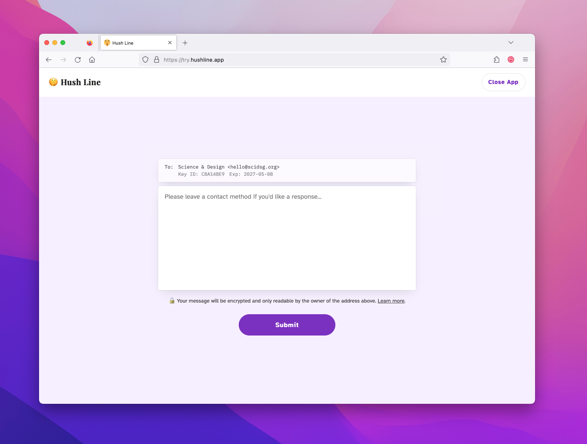Hush Line is a website with a form.
When a member of your community writes a message into the form and clicks the submit button, Hush Line encrypts their message so that only you can read it, then emails it to you.
I still don't get it, conceptually
Have you ever used Google Forms? You create a form, say a text box, and send the URL to people to fill out. When a person fills in your form and hits submit, their response gets automatically put into a Google Spreadsheet.
This is convenient for things like, surveying food choices or picking a date that works for most people. But what if you're asking people to share more sensitive information? To make them feel as safe as possible, we want a system where only you can read the responses. Not other users, not your company's IT department, not even Google. Furthermore, we don't even want to know anything about the submitter they don't choose to reveal.
This is what Hush Line provides.
Hush Line Prerequisites
In this section we'll get everything ready before installing Hush Line.
General
- Download Tor Browser
- Create a Gmail account
- Create PGP keys using Mailvelope
Raspberry Pi
- Download the Raspberry Pi Imager
- Flash a microSD card with Raspberry Pi OS (64-bit)
VPS
- Create a Digital Ocean account
- Create a new server
General Prerequisites
Contents
Software
1. Tor Browser
Your Hush Line has the option to only be reachable via the Tor Browser. It's not only the most private but also the easiest to set up and deploy.

2. Gmail
We'll use Gmail for its high reliability. If you don't already have an account, create one. Having an email address separate from your personal account is a good practice.
3. Mailvelope
To decrypt Hush Line messages, we'll use Mailvelope, which integrates with Gmail, adding PGP functionality; add the extension to Firefox or Chrome.
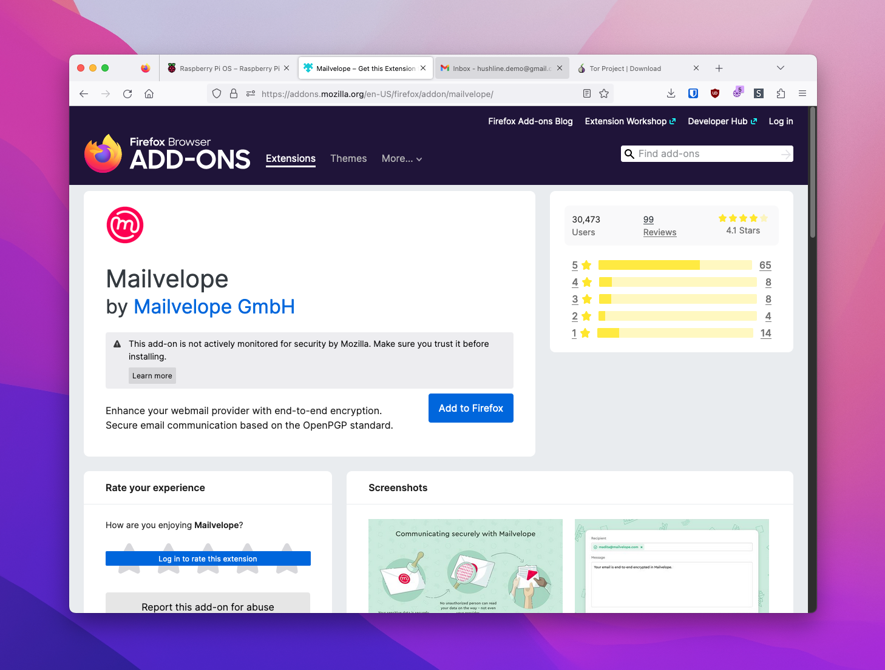Open the extension in your browser and click "Let's Start."

Creating Keys
What is PGP? Let's use a non-technical metaphor
Here's how I like to think of PGP: Once set up, you'll have a very special envelope where people can put their messages inside. These envelopes are so special that they can only be opened by one specific letter opener.
Now let's say we want to receive secret messages from your friend Bob. First, you give Bob plenty of your special envelopes. (We do not give Bob the letter opener since you don't want Bob to be able to open mail intended for you.) Bob writes his message, places it in one of your envelopes, and sends it to you. When you receive the sealed envelope, you use your letter opener to open it, confident that no one else can read its contents along the way.
4. Create your keys
To create our envelopes and letter opener, we're going to use our Mailvelope extension.
Click on "Generate Keys." Give your key a name, enter your Gmail address, and create a strong password.
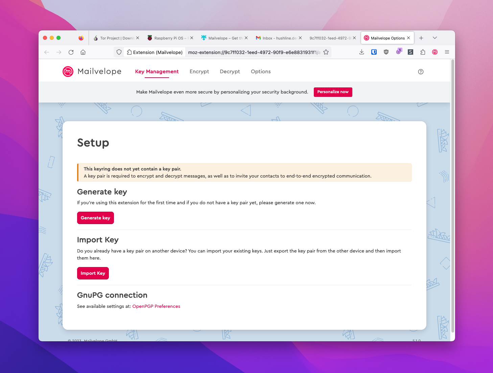 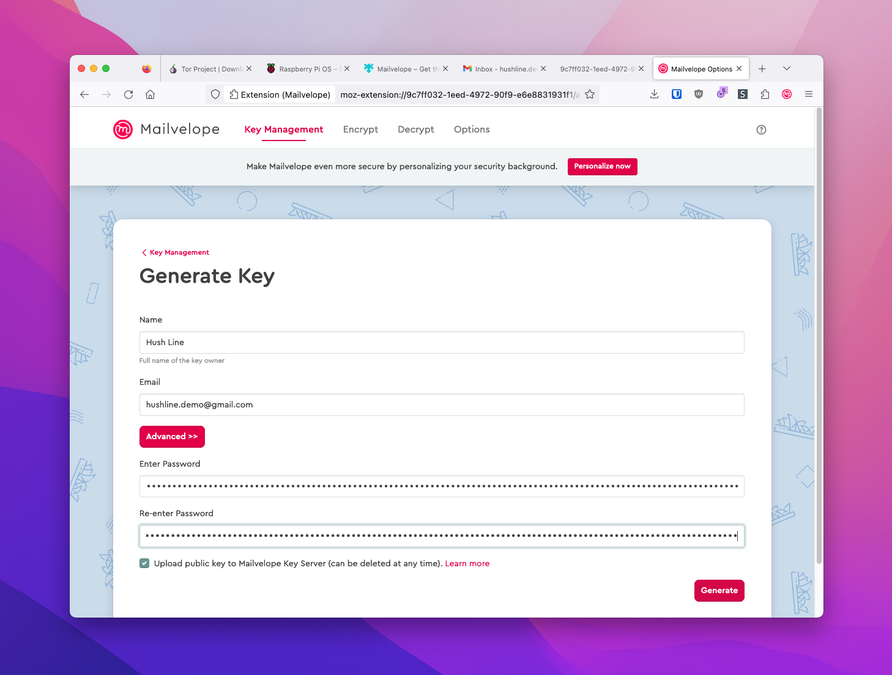 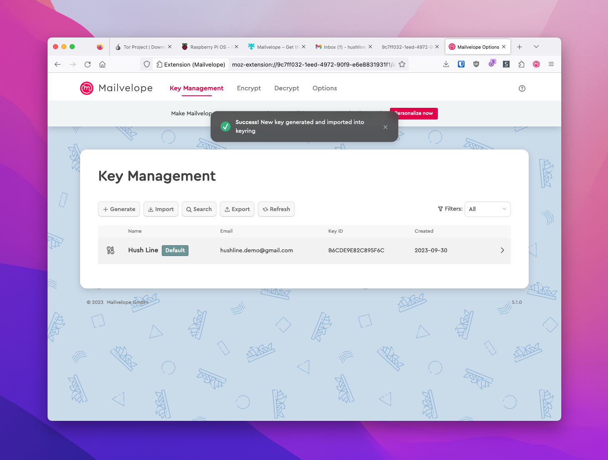5. Verify your email address
Before using your key, you'll have to verify your email address. Look for a message from Mailvelope Key Server in your Gmail inbox.
The message is encrypted, and when opened, you'll be prompted for your Mailvelope password to read the email. After entering your password, click the link.
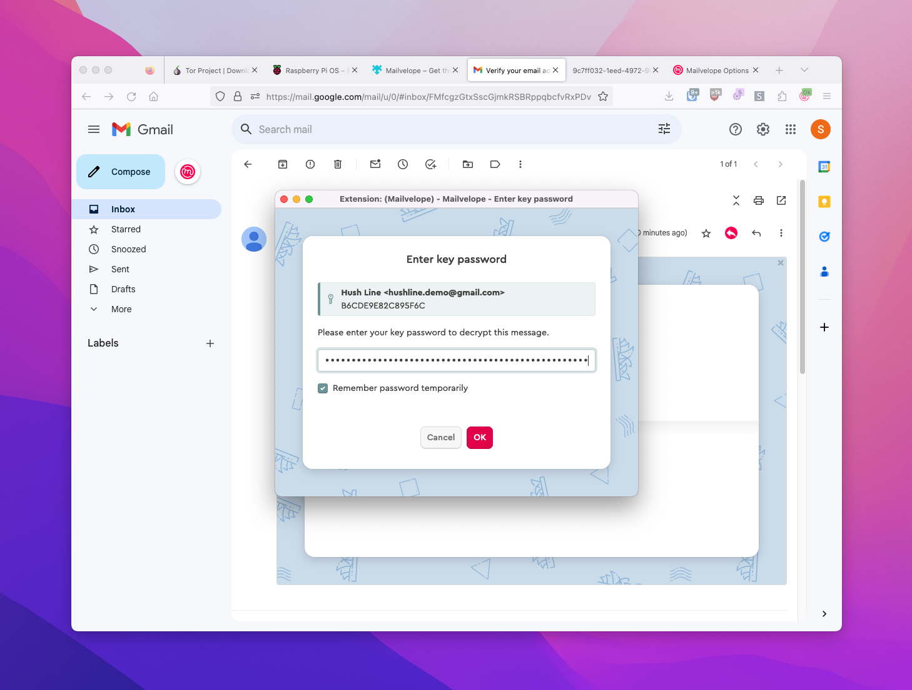6. Copy your PGP key
After confirming that your email was verified, click on the supplied URL.
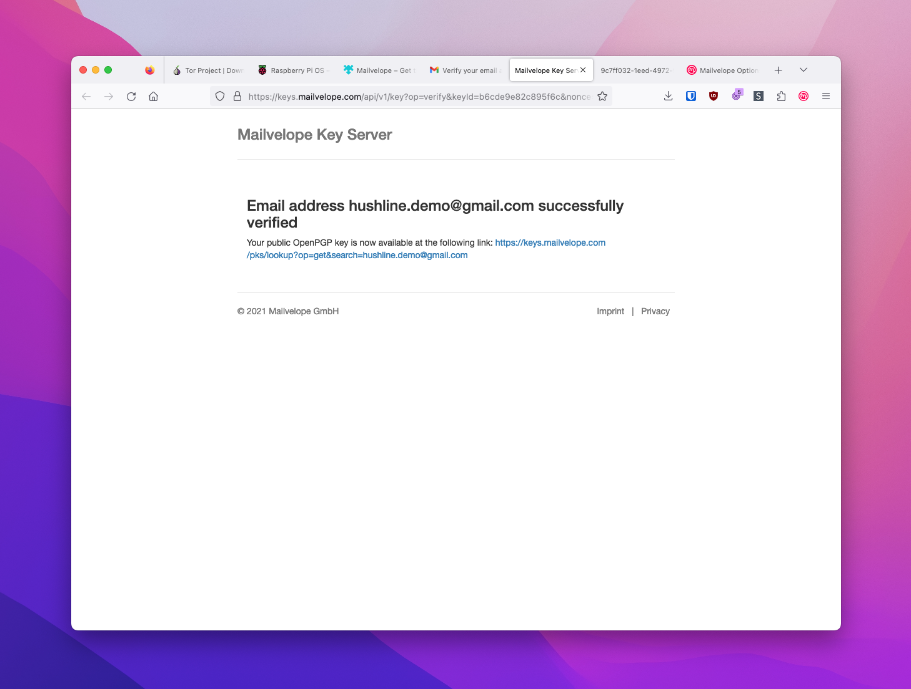Your PGP Key is in the grey box, beginning with -----BEGIN PGP PUBLIC KEY BLOCK----- and ending with -----END PGP PUBLIC KEY BLOCK-----. Copy your entire key into a notepad for easy access.


App Password
7. Create an app password
Hush Line has a mail server installed to send encrypted messages to your email address. You'll need SMTP information, as well as a password. You should never use your primary account password; instead, create app-specific passwords. These are purpose-made for single applications.
From your Gmail account, click on your avatar to access your account-level options. Select Manage Google Account.
Next, click on the Security tab on the left, then scroll to the bottom of the page to find App Passwords.


Click on App Passwords, then enter a name, then click Create. A dialog will pop up with your app-specific password. Copy it to a notepad for easy access.
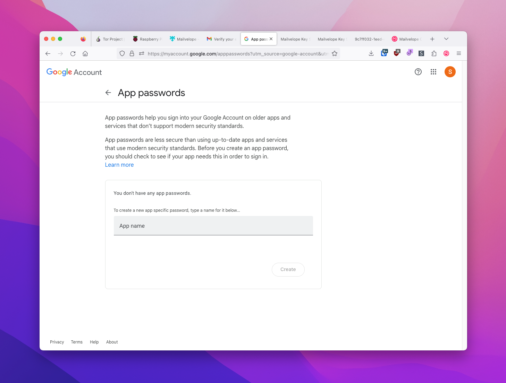 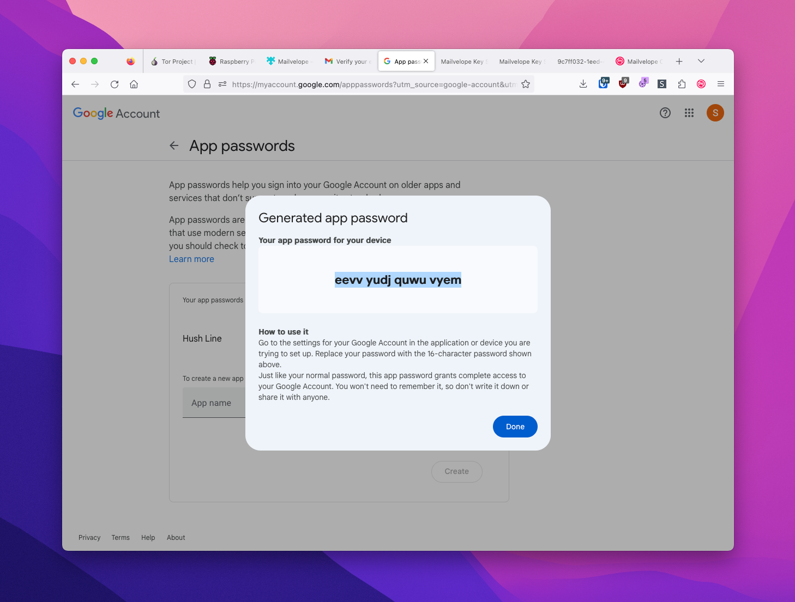🎉 Congratulations, you're now ready to install Hush Line!
Raspberry Pi Prerequisites
Hardware
- Hardware: Raspberry Pi 4/3B+
- Power: Raspberry Pi USB-C Power Supply
- Storage: Micro SD Card
- SD Card Adapter: SD Card Reader
- Affiliate links
Prepping Your Pi
If you didn't know, your Raspberry Pi doesn't come with an operating system. Don't panic! We're going to install one now called Raspberry Pi OS.
1. Raspberry Pi Imager
Like a Macbook runs MacOS, and a Dell runs Windows, a Raspberry Pi runs Linux, which comes in many different flavors depending on your needs. Since we're using a Raspberry Pi, we'll use Raspberry Pi OS (64-bit), an operating system made just for the Pi. The Imager installs the operating system onto your microSD card, where we'll set up Hush Line. Download it from https://www.raspberrypi.com/software/.
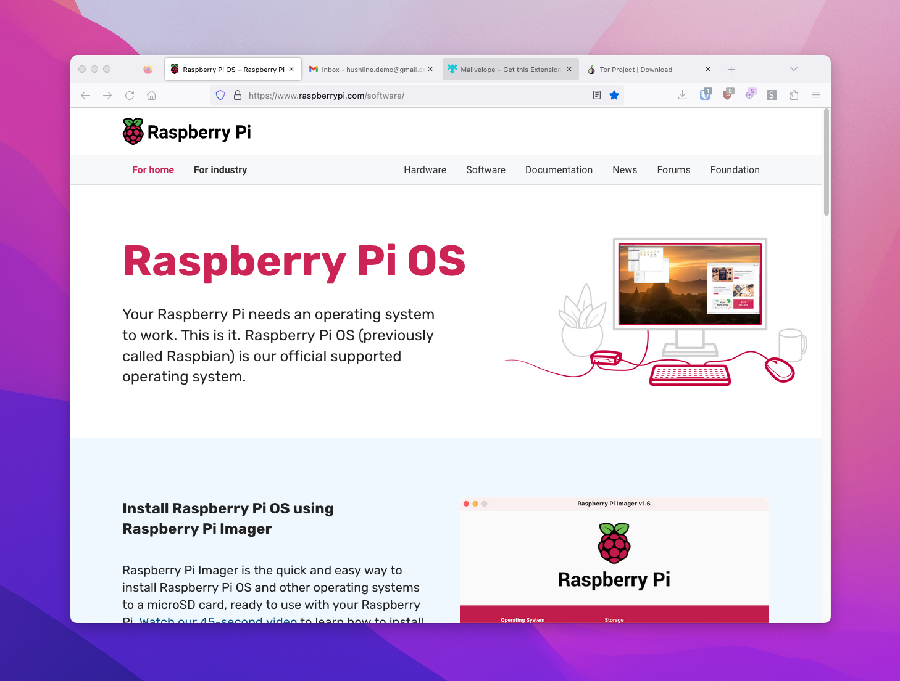
Prep Your Card
2. Install Raspberry Pi OS
Open the Raspberry Pi Imager and click Choose OS > Raspberry Pi OS (other) > Raspberry Pi OS (64-Bit).
Insert your microSD card into your computer, and then click Choose Storage and select your card.

Before clicking Write, click on the Settings gear in the bottom right of the window. Configure the following settings:
- Hostname =
hushline - Enable SSH with password authentication
- User =
hush - Set a strong password
- Add wifi settings

Boot up and log in to Your Pi
3. Insert microSD Card
Take your SD card and insert it into your Raspberry Pi. You'll find the SD card slide on the bottom of the board, opposite the ethernet ports.
Plug the power supply into the device and let it boot up.
4. Log In
On a Mac, open Spotlight search by pressing CMD + Space. Enter "Terminal" and select the application with the same name.
Enter ssh hush@hushline.local, and when prompted, enter the password you created in the second step.

5. Update your system
The last thing we need to do is to update our system. First, we'll give ourselves admin priviledges, then perform the update:
Enter sudo su, then apt update && apt -y dist-upgrade && apt -y autoremove.

🎉 That's it, you're ready to get started with Raspberry Pi!
VPS Prerequisites
In this section, we'll prepare to install Hush Line on a virtual private server (VPS). This means your Hush Line will run on a rented, private server owned by a company like Digital Ocean.
You'll need the following things:
- Debit or credit card
- Digital Ocean, or any other VPS provider
Digital Ocean
Digital Ocean is an infrastructure service provider that provides a cost-effective way to create your first virtual private server (VPS).
1. Create an Account
Go to digitalocean.com and create an account. You'll need to enter payment information before you can create a VPS.

2. Create a VPS
Digital Ocean calls their VPS option Droplets. To create a droplet click the green "Create" button at the top of the screen, the click "Droplets."

You can configure your server to your desired specifications, but for this guide, we'll choose the following options:
- Location: San Francisco
- Image: Debian 12
- Size: Basic
- CPU: Regular SSD @ $4/mo
Create a strong password, then click "Create Droplet."

After a minute or two, your Droplet should be ready. The "Resources" tab should be visible, and just below, you'll see the IP address for your Droplet.

3. Log In
On a Mac, open Spotlight search by pressing CMD + Space. Enter "Terminal" and select the application with the same name.
Enter ssh root@<IP Address>, and when prompted, enter the password you created in the second step.

4. Update your system
The last thing we need to do is to update our system. Enter apt update && apt -y dist-upgrade && apt -y autoremove.

🎉 Congratulations, you're now ready to install Hush Line on Digital Ocean!
Threat Modeling for Hush Line Deployment
Introduction
Deploying an anonymous tip line, like Hush Line, requires understanding the environment in which it will be used. Different organizations and individuals face unique threats, and this guide aims to help you navigate these challenges. By understanding your threat landscape, you can choose the appropriate deployment method that balances accessibility and security for your needs.
Understanding the Threats
To select the correct Hush Line deployment, consider the potential risks and consequences you or your tipsters might face:
Low Threats
These scenarios typically involve the primary risk of non-targeted or generic cyber threats. The fallout from a security breach is minimal.
We recommend using a VPS and deploying Hush Line as a public domain to a URL like this: tips.acme.com.
Example Use Cases
- 💼 Small to medium businesses
- 🏫 Schoolhouses
- 🎈 Conference organizers
Medium Threats
Here, the risks escalate. They include targeted threats but might not require advanced defense measures.
We recommend using a VPS and deploying Hush Line as a public domain to a URL like this: tips.acme.com. When sharing your Hush Line address, include the onion address for people who require higher levels of anonymity.
Example Use Cases
- 📈 Publicly traded businesses
- 🩺 Law or doctor's offices
- 🚨 Domestic abuse hotlines
High Threats
These are scenarios where targeted threats are likely, and consequences can be severe, like endangering someone's physical safety.
We recommend an onion-only deployment for high-threat environments using a VPS or a local device like a Raspberry Pi. If your physical safety isn't guaranteed and device confiscation is possible, you should only use a VPS, as this will provide the greatest protection for your community, tip line, and yourself.
Example Use Cases
- 📰 Journalists
- 🆘 Government whistleblowers
- 🚔 Locations with internet censorship
Malicious Actors & Misinformation
Always be aware that anonymity can be a double-edged sword. While it provides protection for genuine whistleblowers, it can also shield malicious actors. Regularly vet and verify the tips you receive to guard against misinformation campaigns, especially in high-risk scenarios.
Installing Hush Line
Let's learn how to get your very own Hush Line up and running so you can receive private information from your community.
Choosing the right deployment
Given Hush Line's range of deployment choices, weigh the pros and cons of each:
-
Onion-only: Best for high-threat environments, offering maximum anonymity. However, it might be less accessible for non-technical users.
-
Tor + Public Web: Offers a balance of accessibility and security. Useful for low-to-medium-threat scenarios.
Where to install Hush Line
-
Virtual Private Server (VPS): - Deploying to a virtual private server (VPS) like Njalla or Digital Ocean is easy and cost-effective. You should use a VPS if you're deploying to a public website.
-
Physical Device: A physical device like a Raspberry Pi gives you more control but could be at risk if the physical location is compromised. It is ideal for high-risk scenarios where control over the infrastructure is crucial.
It's important for all deployment types that you share your addresses with your community openly and clearly and reinforce to your users only to use the addresses you've shared.
Boosting Security
To further bolster security:
- Only install Hush Line on a dedicated server.
- Consider using dedicated devices to check emails from Hush Line.
- Employ secondary verification methods for significant tips.
- Enhance anonymity with tools like VPNs or secure browsing techniques.
Maintenance & Updates
While Hush Line offers automatic updates, it's vital to:
- Regularly review the system for potential threats.
- Stay informed about the latest security updates and patches.
- Engage in regular security training and awareness for all staff involved.
Conclusion
Deploying Hush Line is a step towards fostering open communication while safeguarding anonymity. Understanding the threats, choosing the right deployment option, and following security best practices can ensure a secure and effective platform for your community.
For organizations seeking in-depth threat analysis and tailored advice, please send an email to hushline@scidsg.org.
Tor-Only Install
A Tor-only install is an excellent option for someone requiring anonymity and a high level of security, a journalist or human rights activist, for example.
1. Run The Installer
After logging in to and updating either your Raspberry Pi or VPS, enter the following command to start the installation process:
curl --proto '=https' --tlsv1.2 -sSfL https://install.hushline.app | bash

Choose "Tor-Only" at the first prompt for the installation type.

2. Add Email Information
Hush Line will send an email with the encrypted Hush Line message to the account you configure here. Since we're using Gmail, we'll need the following information:
- Gmail address
- SMTP Address:
smtp.gmail.com - App Password (from prerequisites)
- Port: 465
- Public PGP Key (from prerequisites)

Once the installation completes, you'll see a message that looks like this:
✅ Installation complete!
Hush Line is a product by Science & Design.
Learn more about us at https://scidsg.org.
Have feedback? Send us an email at hushline@scidsg.org.
• Hush Line is running
http://5450rww63n5yvp5xzojb41rcx63g3pwaig63ezwp×5x75igzh×4w6qyd…onion

3. Confirmation Email
You'll receive an encrypted email confirming your Hush Line's successful installation, which includes your address and a link to download Tor Browser.

🎉 Congratulations! You've successfully set up your own anonymous tip line!
Tor + Public Web Install
If you're someone using Hush Line for non-life-threatening scenarios - educators running a Hush Line for student reporting, or an employer for anonymous employee reporting - you might want to deploy to a public URL - one that will work in browsers like Chrome, Firefox, or Safari. We'll exclusively use a VPS.
1. Run The Installer
After logging in to and updating either your Raspberry Pi or VPS, enter the following command to start the installation process:
curl --proto '=https' --tlsv1.2 -sSfL https://install.hushline.app | bash
Choose "Tor + Public Domain" at the first prompt for the installation type.
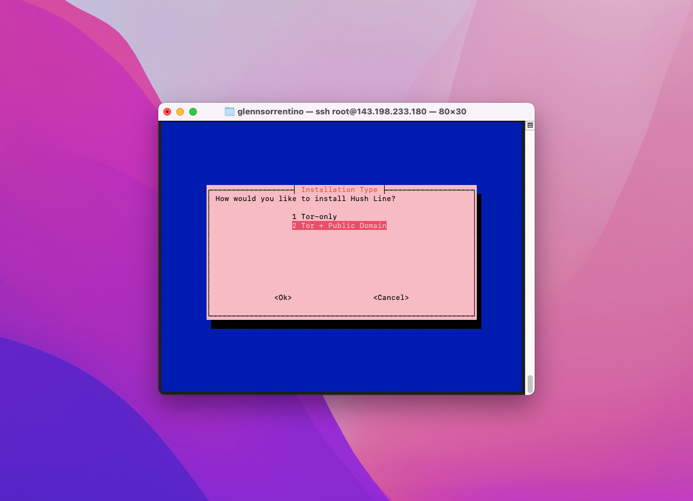2. Add Information
Hush Line will email the encrypted Hush Line message to the account you configure here. You'll also need to purchase a domain name for your Hush Line. We'll need the following information:
- Domain name
- Gmail address
- SMTP Address: smtp.gmail.com
- App Password (from prerequisites)
- Port: 465
- Public PGP Key (from prerequisites)
3. Configure DNS
Now, we need to point your domain name to your new Droplet. When the installer reaches the final step, it will display the exact information that you need to enter in your domain's DNS settings.

Once the installation completes, you'll see a message that looks like this:
✅ Installation complete!
Hush Line is a product by Science & Design.
Learn more about us at https://scidsg.org.
Have feedback? Send us an email at hushline@scidsg.org.
● Hush Line is running
https://ourdemo.app
http://jnaoywuss3dbgrmroeoqtsjymzf46in7lzh3bx6nwv3bzvwmhdvqytad.onion
4. Confirmation Email
You'll receive an encrypted email confirming your Hush Line's successful installation which, includes your addresses and a link to download Tor Browser.
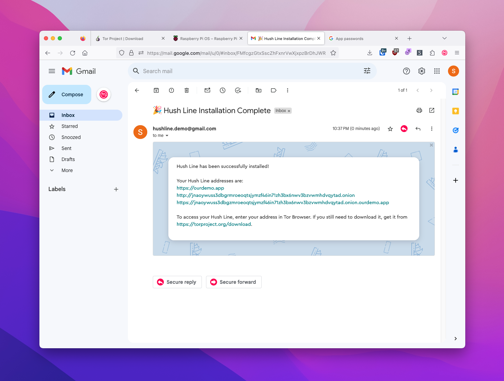🎉 Congratulations! You've successfully set up your own public anonymous tip line!
Installing Hush Line
Let's learn how to get your very own Hush Line up and running so you can receive private information from your community.
Information Page
Hush Line deploys with an information page that provides the sender with additional information that might be helpful before submitting a message.

When to use Hush Line
We've leaned on the guidance from Whistleblower.org and included some information from their resources for when to use a tip line. They include when you have evidence of wrongdoing, including:
- a violation of law, rule, or regulation,
- gross mismanagement,
- a gross waste of funds,
- abuse of authority, or
- a substantial danger to public health or safety.
Hush Line addresses
If you deployed to a public domain, you'll find both your onion address and public website listed here.
Share it!
This is a great page to print out and place where it's easily discoverable. If you're using Hush Line for a school or workplace, you can print it, place it in common areas, copy the info, and email it broadly. If you're a journalist, this can be the page you share publicly so people using your Hush Line have more context before sending a message.
Verify your address!
Before you trust any link, whether an onion domain or a public website, you should verify its address. We encourage Hush Line operators to post their address in at least three different locations - social media, website, and email signature, for example - so individuals sending a message can verify they have the correct address before visiting and sharing potentially sensitive information.
Sending Messages
For someone in your community to send you a Hush Line message, they just need to go to one of your addresses and enter their message.
1. Tor
If you chose a Tor-only deployment, you should have seen an output like this after installation was completed:
✅ Installation complete!
Hush Line is a product by Science & Design.
Learn more about us at https://scidsg.org.
Have feedback? Send us an email at hushline@scidsg.org.
• Hush Line is running
http://5450rww63n5yvp5xzojb41rcx63g3pwaig63ezwp×5x75igzh×4w6qyd…onion
This information should also be in the confirmation email you received upon successfully setting up your Hush Line.
Open up Tor Browser and paste your onion address in the address bar. Tor is a little slower than regular internet, so it'll take a few seconds before your site loads.

2. Public Websites
If you deployed Hush Line to a public website, you should have seen an output like this:
✅ Installation complete!
Hush Line is a product by Science & Design.
Learn more about us at https://scidsg.org.
Have feedback? Send us an email at hushline@scidsg.org.
● Hush Line is running
https://ourdemo.app
http://jnaoywuss3dbgrmroeoqtsjymzf46in7lzh3bx6nwv3bzvwmhdvqytad.onion
In the example above, the first and last addresses can load in regular browsers like Chrome, Firefox, or Safari. The onion-only address needs Tor Browser to load.
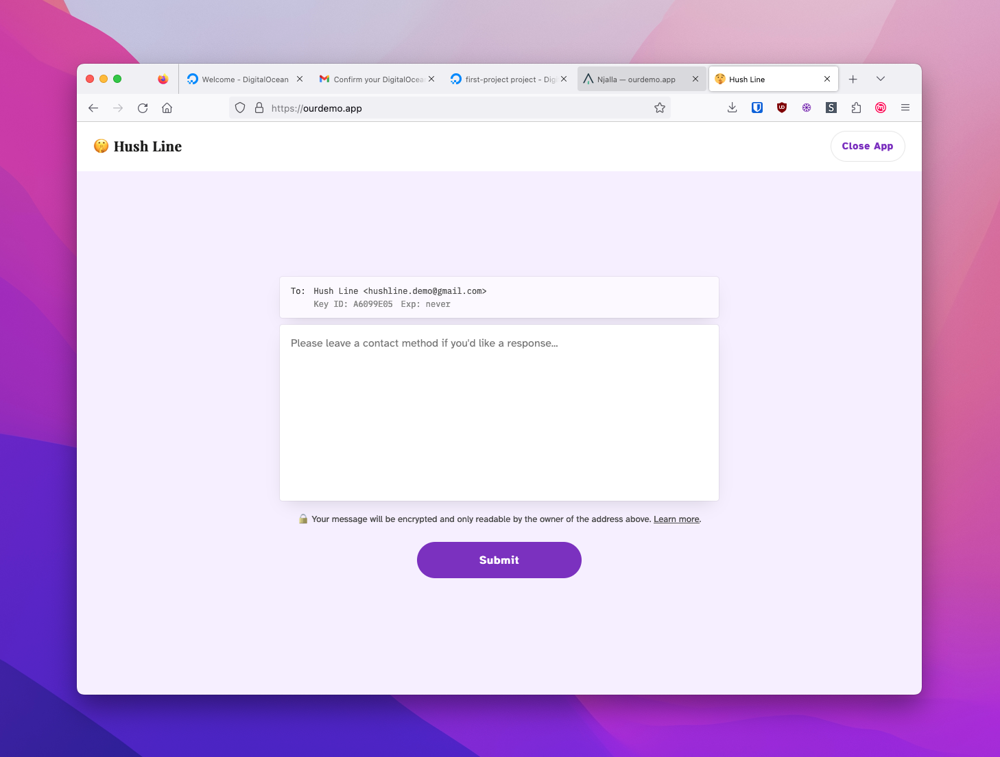Sending Files
By design, Hush Line is a text-only, one-way messenger. We've designed it this way to greatly reduce your attack surface by not opening yourself up to accepting the eventually malicious file.
There may still be times when you want to receive files, and the best way to do so would be to use OnionShare in combination with Hush Line.
OnionShare
OnionShare is a free and open-source tool facilitating anonymous peer-to-peer file sharing. It creates an ephemeral onion service that someone can use to access the files you want to share. The service automatically disconnects once the information is downloaded, leaving no trace.
Sharing Files
Simply select the files you want to share, click "Start Sharing," and share that address in your Hush Line message.
Since the files are being shared directly from the computer running OnionShare, you'll have to keep the app open and the device powered on, otherwise your data will be unavailable. Choose the option to stop sharing after the files have been sent, and keep in mind that the person you're trying to send a message to may not be able to check their email daily, but when they receive the files, the connection will automatically close.
Private Key
By default, OnionShare will use a private key to protect the data you want to share - it's basically a strong password that someone will need in order to access your files.
🧠 Remember to include your OnionShare address and private key in your Hush Line message.
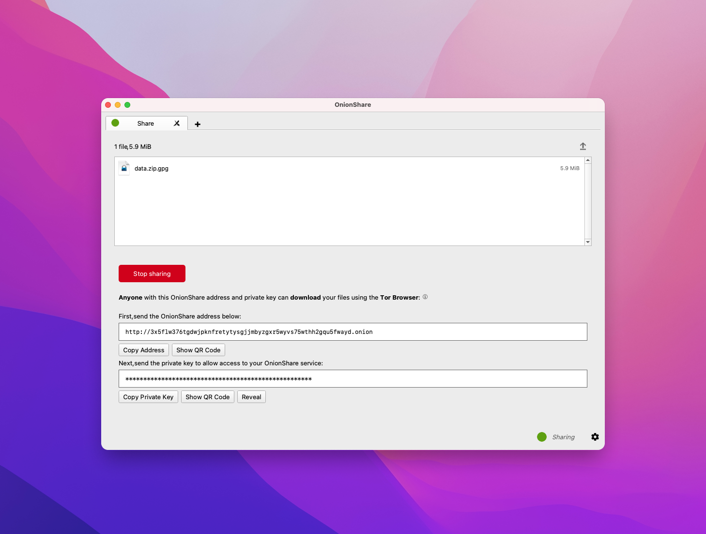Preparing Files
Before sending files to someone, first zip (sometimes called "compress" or "archive"), then encrypt them with your recipient's public PGP key.
Reading Messages
When someone sends you a Hush Line message, it'll get delivered to the email account you configured during installation. Messages will have the subject line "🤫 New Hush Line Message Received."
Gmail + Mailvelope
When you click on your Hush Line message you might be prompted to enter your Mailvelope password. Recall that this is the password we set up in our prerequisites.
 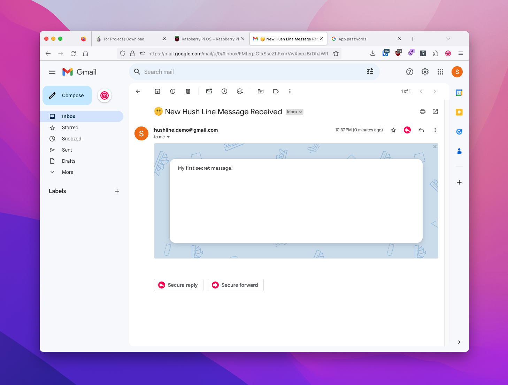
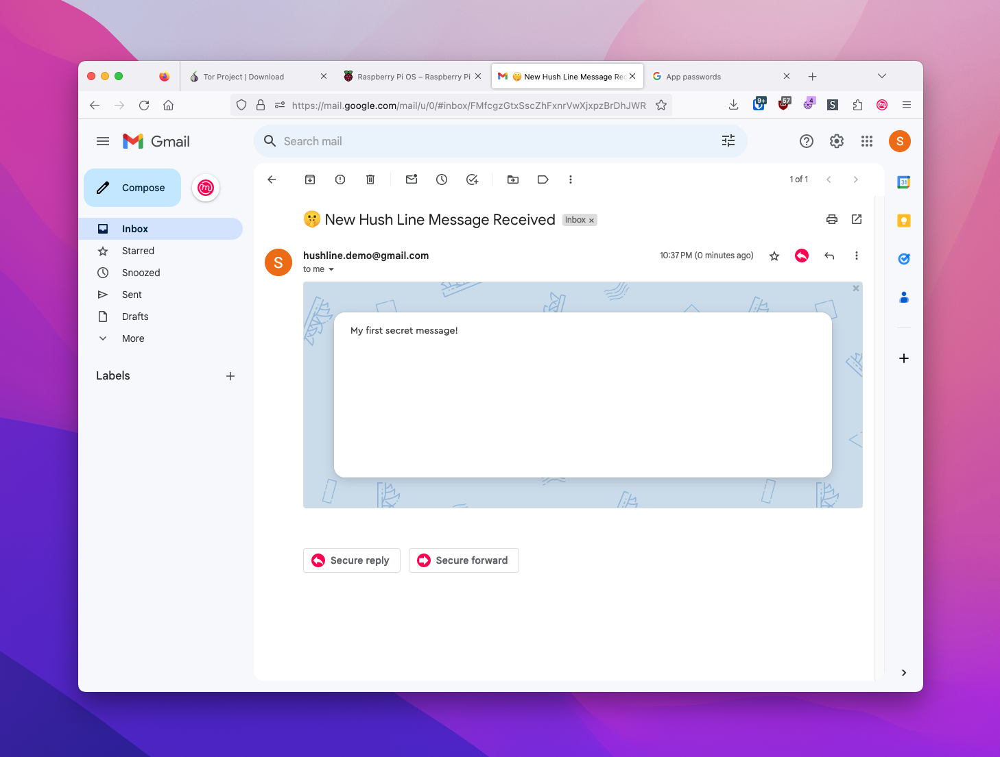
🎉 Congratulations! You're ready to go! If you have any questions, please send questions to hushline@scidsg.org.
Handling Files
By design, Hush Line is a text-only, one-way messenger. We've designed it this way to greatly reduce your attack surface by not opening yourself up to accepting the eventually malicious file.
If you really need to accept files, to help protect yourself better, always follow these rules:
- Instruct users to zip, then encrypt their files with your public PGP key.
- Avoid downloading unencrypted files from anyone you don't know.
- When you download the files, save them to a dedicated, external USB drive, never your hard drive.
- Open the files with a dedicated, offline-only (air-gapped) computer.
- Never open the files on your personal or work computers.
Hush Line's Features
1. PGP Email Encryption
To enhance the security of communications, Hush Line integrates the PGP (Pretty Good Privacy) protocol. This ensures that every email message is encrypted, offering a secure channel even if the message's content becomes intercepted.
2. Simple, Guided Setup
Ease of setup is paramount, and Hush Line’s installation script automates the configuration process. From package installations to system settings, the script takes care of the nuances, ensuring a hassle-free experience.
3. Tor-Ready
For users who prioritize anonymity, Hush Line is equipped to function seamlessly over the Tor network. Upon setup, a hidden Tor service is established, directing traffic to the local server. This provides an onion address, allowing users to access the platform anonymously.
4. Automatic HTTPS Certificates
With cyber threats on the rise, secure connections are crucial. Hush Line integrates certbot, automatically fetching and installing HTTPS certificates. This ensures encrypted communication between the user's browser and the Hush Line server.
5. Intrusion Detection
Hush Line integrates Fail2Ban, an intrusion prevention tool, designed to scan log files for malicious activity. If any is detected, fail2ban imposes a temporary ban on the suspicious IP, thereby fortifying the platform against brute-force attacks.
6. Firewall
The Uncomplicated Firewall (UFW) is incorporated into Hush Line's framework. This firewall tool simplifies the process of managing iptables, ensuring that only approved traffic can access the server.
7. Automatic Updates
Outdated systems are a breeding ground for vulnerabilities. Hush Line leverages the unattended-upgrades package to automate system updates. This ensures that the system always runs the latest security patches and software versions.
8. IP Address Scrubbing
Respecting user privacy, Hush Line has provisions to scrub IP addresses from incoming requests. This means that user location and network information are not stored or logged, enhancing user anonymity.
9. Hardened Nginx Security Headers
The platform is served using nginx, and the server is configured with security-hardened headers. These headers protect users from various web vulnerabilities like cross-site scripting and clickjacking, ensuring a secure browsing experience.
10. No Account Needed
Emphasizing ease of use and privacy, Hush Line eliminates the need for account creation. Users can immediately start messaging without the burden of sign-ups or the risk of personal data storage.
11. New Censorship-Resistance Research
Hush Line configures a sauteed onions domain when deploying to a public website like a .com, .org, etc. Sauteed Onions is a new method for making your onion address more censorship resistant by binding it to your domain name using HTTPS certificates, creating a new domain that looks like: addressforyouronion.acme.com. Now, when someone uses a certificate search tool like crt.sh and looks for your domain name, they'll find your onion address, too.
More Resources
- Working with Whistleblowers, Government Accountability Project
- Government Accountability Project Resources
- Here's how to share sensitive leaks with the press, Freedom of the Press Foundation
- Security considerations for confidential tip pages, Freedom of the Press Foundation
Glossary
Hush Line site: The website that your Hush Line form is available at. If you're running Hush Line in "Tor-only" mode, your Hush Line site will have a URL like http://vfalkrrucjb7pztjskfumnqytpze5iimu4i2t2ygwv6ntylvylt2flad.onion and will be only accessible through the Tor Browser.
Hush Line form: The text box form that occupies your Hush Line site. Community members may choose to type and submit a message through this form (thus becoming a source).
community: The pool of people who know your Hush Line site's URL. If you only share your Hush Line site's URL with a team of employees, that's your community. If you promote your Hush Line address publicly, your community may be very large.
community member: A member of your community. A person who is a potential source.
source: The community member who has written and submitted a given message
message: The text that a source submits to your Hush Line form. Hush Line only accepts text messages (no multimedia or file attachments). All Hush Line messages are encrypted and thus private. Also note that Hush Line messages only go one-way: from source to user.
Hush Line user: The person who runs the Hush Line. We assume the user has access to the Hush Line email address and Hush Line PGP key.
Hush Line email address: The email address that receives your Hush Line messages from your sources
Hush Line PGP Public Key: The PGP public key that Hushline uses to encrypt all messages before sending emails to your Hush Line email address.
Hush Line PGP Private Key: The private PGP key the user uses to decrypt Hush Line messages. The PGP password is also needed to decrypt messages.
Hush Line PGP password: The password needed, in combination with the Hush Line PGP Private Key, to decrypt and read messages. (Keep this secret.)